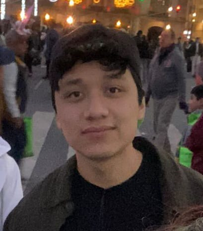

Cristian Felipe Galván Islas
Estudiante de TSU. TI en Desarrollo de Software Multiplataforma
Contacto:
- Facebook: Cristian Galván
- Teléfono: 5576405092
- Correo: islascris.galvan@gmail.com
| Perfil profesional |
Estudiante de nivel superior en la Universidad Tecnológica de Nezahualcóyotl, tengo una gran interés en la programación
y por ese motivo estoy en esta carrera, tengo la capacidad de aprender rápido, me adapto muy bien a cualquier entorno,
se me facilita el trabajo en equipo, cada día me gusta aprender algo nuevo y desarrollar más mis capacidades.
Acabe el bachillerato en el Colegio de Bachilleres 12 y tengo una constancia de Formación laboral en Auxiliar Diseñador Gráfico. |
Estudios:
- Primaria: Felipe Carrillo Puerto
- Secundaria: Narciso Bassols No.74
- Preparatoria: Colegio de Bachilleres 12
| Habilidades |
- Comunicación asertiva
- Liderazgo
- Resolución de problemas
- Organización
- Resposabilidad
- Trabajo en equipo
|
| Aptitudes |
Intereses |
Experiencia Profesional |
- Habilidades en diseño gráfico
- Investigación y análisis de información
- Capacidad para aprender rápidamente nuevas habilidades o conceptos
- Disposición para la mejora continua
|
- Tocar intrumentos musicales
- Lectura
- Artes marciales
|
Trabajo de medio tiempo en una paleteria |
| Acerca de mi |
Soy un chico muy capaz de realizar cualquier cosa que se propongas, siempre trato de dar lo mejor de mí, soy muy risueño,
me gusta mucho convivir con las demás personas, si algo me sale mal aprendo de mis errores y no me doy por vencido jamás,
intento las cosas hasta que me salen, también tiendo a ser muy perfeccionista, soy alguien pacífico, tranquilo y sobre todo trabajador y responsable. |